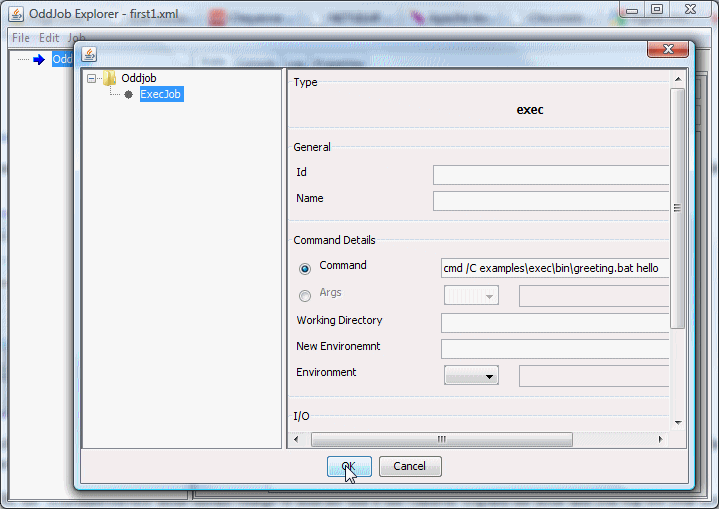
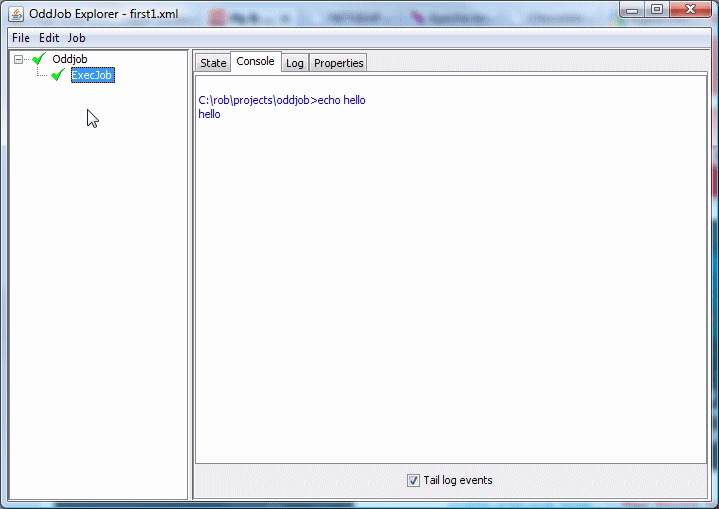

Creating your first job and scheduling it.
So you've downloaded and installed Oddjob. You've started Oddjob Explorer and run through the examples. Now you want Oddjob to do something useful for you.
In the first instance we'll assume this useful thing is in the form of running a batch file and that you would like this useful thing done at regular intervals.
To get Oddjob to do anything, it needs a configuration file which contains the 'jobs' that Oddjob will run. To create our first configuration file we will use Oddjob's GUI Designer. From the File menu of Oddjob Explorer choose New. Select the root 'Oddjob' node in the tree view and right click - then choose Designer.
To create a job for Oddjob to run we must select something from the Job property drop-down box. Here we choose 'exec' which is the job that executes a system command.
Now to specify the command to run. For this example we're going to borrow the batch file from Oddjob's examples folder. Select the newly created ExecJob node in the Designer Job Tree and then in the detail panel click on the 'Command' field and enter.
cmd /C examples\exec\bin\greeting.bat hello
Obviously this is command is only for Windows users but you users on other platforms are bright enough to realize this and substitute an equivalent command.
And that's it - We're done. Click OK on the design panel to return to Oddjob Explorer where we can expand the tree to see our jobs.
You can run the job just like any other job and see the results in the 'Console' tab in the right hand detail panel.
When you close Oddjob this configuration will be lost. If you don't want to loose this precious work Select Save from the File menu and pick a file to save it too. The file name and extension can be anything but the underlying configuration is in XML so it's probably sensible to call it something.xml